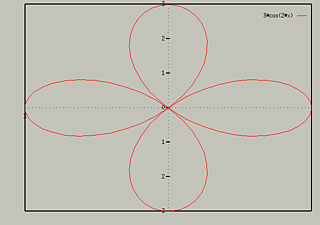
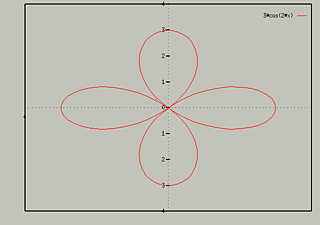

Polar Plots
To switch to graphing with polar coordinates, type:
To switch back to Cartesian coordinates, type:
In polar mode, the independent variable x corresponds to the
angle, or theta noramally used for polar plots. Polar plots are
always plotted in a rectangular box, to change the size of the graph,
use the set yrange command. This will change both the
horizontal and vertical range. For an example, consider the following:

To change the displayed range so their is extra space around the
graph, type:

Note that this would leave the yrange set to [-4:4] for
subsequent plots. To turn autoscaling back on, use the following:
The default for interpretation of the angle is radians. To switch this
value, you can use one of the following:
- set angles degrees
- set angles radians
3D Polar coordiantes
GnuPlot supports the 3D equivalent of polar coordinates, spherical and
cylindrical coordinates, are only available for 3D data
plots. For information on them, see help set mapping.
Table of Contents - Previous - Parametric Plots - Next - Data Plots
College of Natural Sciences /
University of Northern Iowa /
manager@cns.uni.edu
Copyright © 1996 College of Natural Sciences. All Rights Reserved.
Last Modified: 11/5/96